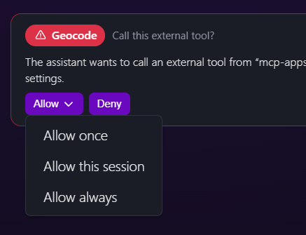

Act V · Putting it together
Ask before an external tool runs

The user chooses how far the permission goes.
1
It names the tool and the server it comes from
2
Allow once, for this session, or always
3
Deny is always one click away
Our open-source agent runtime.